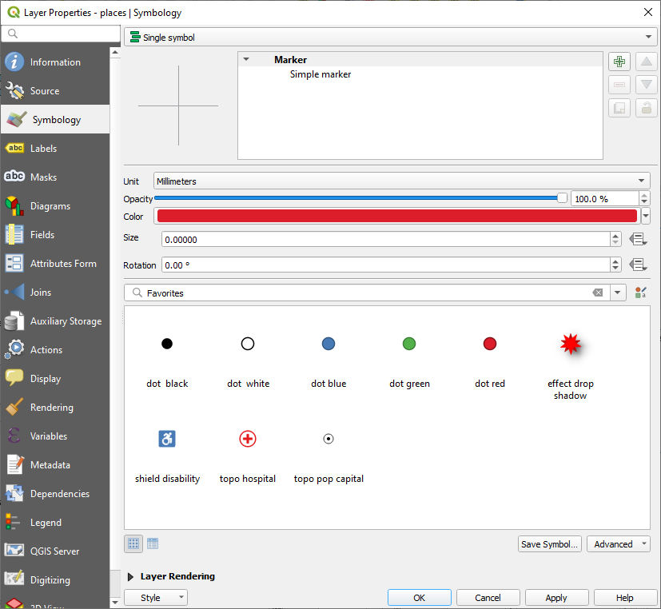
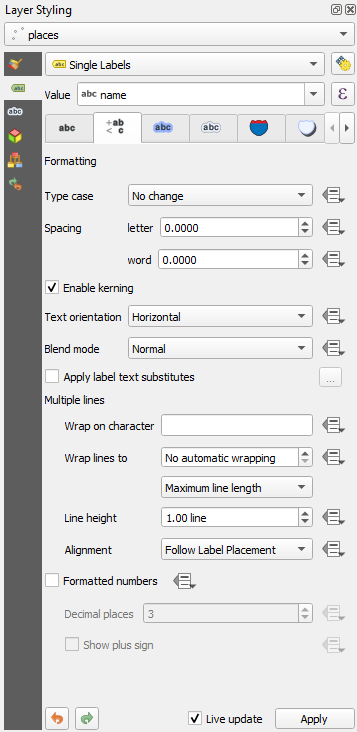
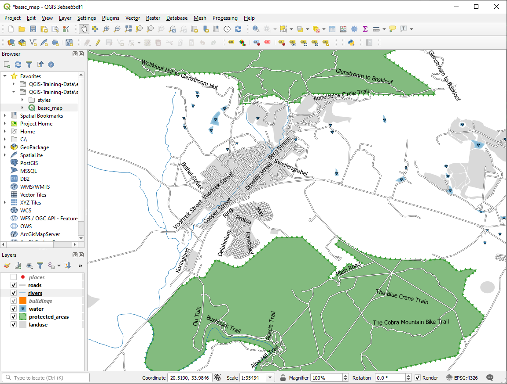
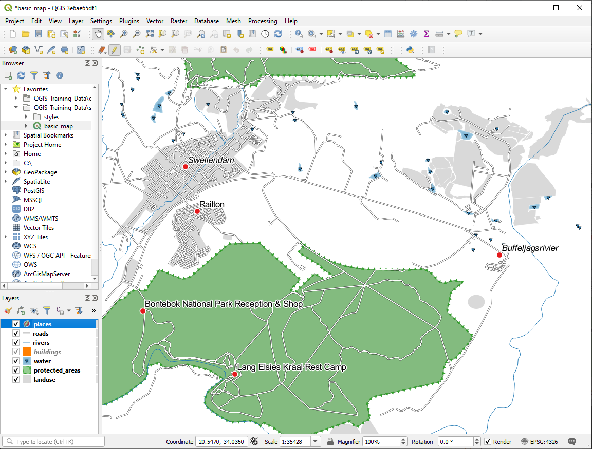

Labels can be added to a map to show any information about an object. Any
vector layer can have labels associated with it. These labels rely on the
attribute data of a layer for their content.
The goal for this lesson: To apply useful and good-looking labels to a
layer.
First, ensure that the button is visible in the GUI:
Go to the menu item View ► Toolbars
Ensure that the Label Toolbar item has a check mark next to it.
If it doesn’t, click on the Label Toolbar item to activate it.
Click on the places layer in the Layers panel so that
it is highlighted
Click on the toolbar button to open the
Labels tab of the Layer Styling panel
Switch from No Labels to Single Labels
You’ll need to choose which field in the attributes will be used for the
labels. In the previous lesson, you decided that the name field was the
most suitable one for this purpose.
Depending on the styles you chose for your map in earlier lessons, you might
find that the labels are not appropriately formatted and either overlap or
are too far away from their point markers.
Note
Above, you used the button in the
Label Toolbar to open the Layer Styling panel. As
with Symbology, the same label options are available via both
the Layer Styling panel and the Layer Properties
dialog. Here, you’ll use the Layer Properties dialog.
Open the Layer Properties dialog by double-clicking on the
places layer
Select the Labels tab
Make sure Text is selected in the left-hand options list, then
update the text formatting options to match those shown here:
Click Apply
That font may be larger and more familiar to users, but its readability is
still dependent on what layers are rendered beneath it. To solve this,
let’s take a look at the Buffer option.
Select Buffer from the left-hand options list
Select the checkbox next to Draw text buffer, then choose
options to match those shown here:
Click Apply
You’ll see that this adds a colored buffer or border to the place labels,
making them easier to pick out on the map:
Now we can address the positioning of the labels in relation to their point
markers.
Select Placement from the left-hand options list
Select Around point and change the value of
Distance to 2.0 Millimeters:
Click Apply
You’ll see that the labels are no longer overlapping their point markers.
3.2.3. ★★☆ Follow Along: Using Labels Instead of Layer Symbology
In many cases, the location of a point doesn’t need to be very specific. For
example, most of the points in the places layer refer to entire
towns or suburbs, and the specific point associated with such features is not
that specific on a large scale. In fact, giving a point that is too specific is
often confusing for someone reading a map.
To name an example: on a map of the world, the point given for the European
Union may be somewhere in Poland, for instance. To someone reading the map,
seeing a point labeled European Union in Poland, it may seem that the capital
of the European Union is therefore in Poland.
So, to prevent this kind of misunderstanding, it’s often useful to deactivate
the point symbols and replace them completely with labels.
In QGIS, you can do this by changing the position of the labels to be rendered
directly over the points they refer to.
Open the Labels tab of the
Layer Properties dialog for the places layer
Select the Placement option from the options list
Click on the Offset from point button
This will reveal the Quadrant options which you can use to set the
position of the label in relation to the point marker. In this case, we want the
label to be centered on the point, so choose the center quadrant:
Hide the point symbols by editing the layer Symbology as usual,
and setting the size of the Marker size to 0.0:

Click Apply and you’ll see this result:
If you were to zoom out on the map, you would see that some of the labels
disappear at larger scales to avoid overlapping. Sometimes this is what you
want when dealing with datasets that have many points, but at other times
you will lose useful information this way. There is another possibility for
handling cases like this, which we’ll cover in a later exercise in this lesson.
For now, zoom out and click on the button in the toolbar
and see what happens.
Reset the label and symbol settings to have a point marker and a label offset
of 2.0 Millimeters.
Answer
Your map should now show the marker points and the labels should be offset by
2mm. The style of the markers and labels should allow both to be
clearly visible on the map:
Set the map to the scale 1:100000. You can do this by typing it into
the Scale box in the Status Bar. Modify your labels
to be suitable for viewing at this scale.
Answer
One possible solution has this final product:
To arrive at this result:
Use a font size of 10
Use an around point placement distance of 1.5mm
Use a marker size of 3.0mm
In addition, this example uses the Wrap on character option:

Enter a space in this field and click Apply to achieve the
same effect. In our case, some of the place names are very long, resulting in
names with multiple lines which is not very user friendly. You might find this
setting to be more appropriate for your map.
Now that you know how labeling works, there’s an additional problem. Points and
polygons are easy to label, but what about lines? If you label them the same
way as the points, your results would look like this:

We will now reformat the roads layer labels so that they are easy to
understand.
Hide the places layer so that it doesn’t distract you
Activate Single Labels for the roads
layer as you did above for places
Set the font Size to 10 so that you can see more labels
Zoom in on the Swellendam town area
In the Labels tab’s Placement tab, choose the
following settings:
You’ll probably find that the text styling has used default values and the
labels are consequently very hard to read. Update the Text
to use a dark-grey or black Color and the Buffer
to use a light-yellow Color.
The map will look somewhat like this, depending on scale:
You’ll see that some of the road names appear more than once and that’s not
always necessary. To prevent this from happening:
In the Labels tab of the Layer Properties dialog,
choose the Rendering option and select
Merge connected lines to avoid duplicate labels as shown:
Click OK
Another useful function is to prevent labels being drawn for features too short
to be of notice.
In the same Rendering panel, set the value of
Suppress labeling of features smaller than … to 5.00mm
and note the results when you click Apply
Try out different Placement settings as well. As we’ve seen before,
the Horizontal option is not a good idea in this case, so let’s
try the Curved option instead.
Select the Curved option in the Placement panel of
the Labels tab
Here’s the result:
As you can see, this hides some labels that were previously visible, because
of the difficulty of making some of them follow twisting street lines while
still being legible. It makes other labels much more useful since they track
the roads rather than float in space between them. You can decide which of
these options to use, depending on what you think seems more useful or what
looks better.
Open the attribute table for places via the button
It has one field which is of interest to us now: place which defines
the type of urban area for each record. We can use this data to influence
the label styles.
Navigate to the Text panel in the placesLabels panel
Click the button next to the Italic text button beneath
Style and select Edit… to open the
Expression String Builder:
Under Fields and Values, double click on place
and then click All Unique. This will list all unique values
of the place field of this layer. Add a = in the text
editor and then double click on town.
Alternatively, you can type: "place"='town' directly in the
text editor.
Click OK twice:
Notice that the labels for all places whose place
field matches town are displayed in italics.

3.2.7. ★★★ Try Yourself: Using Data Defined Settings
Note
We’re jumping ahead a bit here to demonstrate some advanced labeling
settings. At the advanced level, it’s assumed that you’ll know what the
following means. If you don’t, feel free to leave out this section and come
back later when you’ve covered the requisite materials.
Open the Attribute Table for places
Enter edit mode by clicking the button
Add a new column with the button
Configure it like this:
Use this to set custom font sizes for each different type of place
(each key in the place field)
Answer
Still in edit mode, set the FONT_SIZE values to whatever you prefer.
The example uses 16 for towns, 14 for suburbs, 12 for
localities, and 10 for hamlets.
Remember to save changes and exit edit mode
Return to the Text formatting options for the places
layer and select FONT_SIZE in the Attribute field of the
font size data defined override dropdown:
Your results, if using the above values, should be this:
We can’t cover every option in this course, but be aware that the
Label tab has many other useful functions. You can set scale-based
rendering, alter the rendering priority for labels in a layer, and set every
label option using layer attributes. You can even set the rotation, XY
position, and other properties of a label (if you have attribute fields
allocated for the purpose), then edit these properties using the tools adjacent
to the main Layer Labeling Options button:
Now that you know how attributes can make a visual difference for your map, how
about using them to change the symbology of objects themselves? That’s the
topic for the next lesson!
 button is visible in the GUI:
button is visible in the GUI:


 button in the toolbar
and see what happens.
button in the toolbar
and see what happens.


 button
button button next to the Italic text button beneath
Style and select to open the
Expression String Builder:
button next to the Italic text button beneath
Style and select to open the
Expression String Builder: button
button button
button


{kind=link}
{kind=link}
{kind=link}